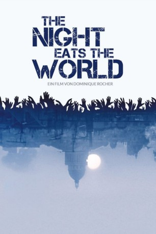
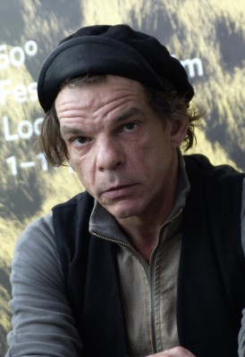

#9271 The Night Eats the World
 
 IMDB-Wertung: 6.0 / 10
IMDB-Wertung: 6.0 / 10  Metascore: 50
Metascore: 50 
Sam (Anders Danielsen Lie) wacht nach einer Party alleine in dem Appartement seiner Ex auf und muss sich plötzlich mit einer bitteren Realität auseinandersetzen. Über Nacht wurde Paris von lebenden Toten heimgesucht und er scheint der letzte Überlebende zu sein. Auf sich alleine gestellt, verbarrikadiert er sich in dem Wohnhaus und versucht dort sein Überleben im Kampf gegen Zombies und einer totale Isolation zu organisieren.
Jahr: 2018
Dauer: 93 Minuten
FSK: 16
Land: Frankreich Studio: EuroVideoTonspuren: DTS - ,
Untertitel:
Auflösung: 1080p (1920x1040) Größe: 4587 MB
Genre: Horror
Regisseur: Dominique Rocher
Drehbuch: Pit Agarmen
Soundtrack: David Gubitsch
Darsteller:
 Anders Danielsen Lie als Sam
Anders Danielsen Lie als Sam Golshifteh Farahani als Sarah
Golshifteh Farahani als Sarah-  Denis Lavant als Alfred
- Sigrid Bouaziz als Fanny
- Jérôme Gaspard als Doublure Sam
 Yves Heck als Voix homme répondeur
Yves Heck als Voix homme répondeur- David Kammenos als Mathieu
- Jean-Yves Cylly als Père immeuble d'en face
- Nancy Murillo als Mère immeuble d'en face
- Lina-Rose Djedje als Fille immeible d'en face
- Victor Van Der Woerd als Zombie immeuble d'en face
- Léo Poulet als Père famille zombie
- Déborah Marique als Mère famille zombie
- Tess Osscini Boudebesse Bejjani als Fille famille zombie
- Fabien Houssaye als Zombie loge
- Jean-Louis Priou als Homme couple mort
- Marie-Thérèse Priou als Femme couple mort
- Choukri Essadi als Zombie paintball
- Clémence Chatagnon als Zombie paintball
- Nina Van Der Pyl als Zombie paintball
- Mathieu Musualu als Zombie paintball
- José-Luis Pages als Zombie paintball
- Peter Agardi als Zombie hallucination
- Marie Bourjala als Zombie hallucination
- Maurice Chan als Zombie chasse à l'homme
- Maya Eymeri als Zombie chasse à l'homme
- Steven Chotard als Zombie chasse à l'homme
- Jonathan Henry als Zombie séquence chat
- Véronique Boutroux als Zombie fenêtre
- Ingrid Liavaag als Voix mère téléphone
Datei: X:\2018(N-Z)\Night Eats the World, The (2018, FSK16, 1920x1040).mkv seit 20.07.2018
Festplatte: HD 2018(G-Z)-2019(A-Z)
 Es gibt insgesamt 172 Filme in der Gruppe '2018(N-Z)'
Es gibt insgesamt 172 Filme in der Gruppe '2018(N-Z)'